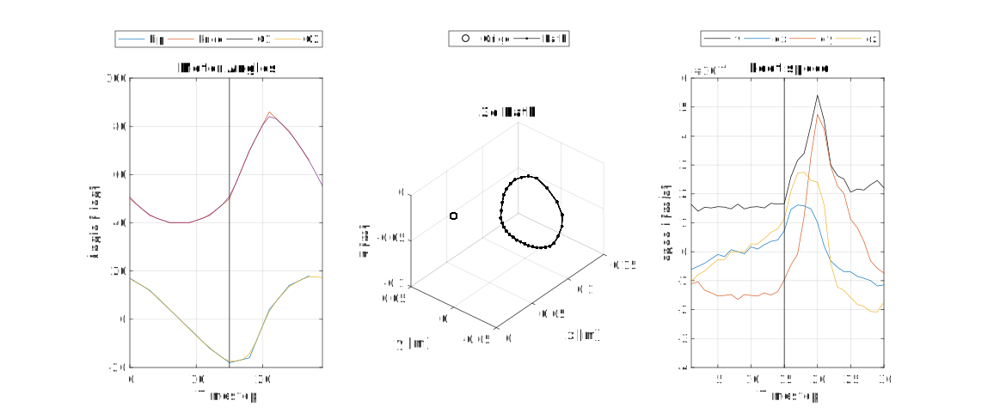

Remote Controlled Walking Robot
Responsible: Emil Tyge (s123259)
Abstract
Design
Task number two is remote controlled race with a non wheeled robot. This challenge proposes two performance measures (speed and maneuvreability) and a single constraint (no wheels). With 8 motors at hand a four legged robot was chosen since this is a common trait among fast land animals. This provides two degrees of freedom per leg, enough to move each foot along the surface of a sphere.
The robot is designed with a tight body and small legs, to keep the weight low and structural stiffness high. While each leg is attached to the body in a plane, such that it can flex a bit up and down, like an animal would with its spine.
In order to get tracktion the feet were padded with foam and ballons.
Leg Modelling
As a basis for gait development, a model of the leg movement is made. Denavit-Hartenberg (DH) parameters, often used to model movement of robot arms is here used, as it provides the proper constraints to movement. The DH-parameters are as follows. And the leg is visualized to the right.
| Joint | θ | d | a | α |
|---|---|---|---|---|
| 1 | Q1 | -2 cm | 4.5 cm | π/2 |
| 2 | Q1 - π/2 | 0 | 8 cm | 0 |
Gait development
Again looking at nature, an example of a fast gait is the trot. This type of gait provides dynamic stability, by alternating which set, of diagonal pair legs, touches the ground. Looking at a single leg, the foot travels in a somewhat circular motion, providing forward traction via a linear movement along the floor, followed by a quick lift and movement to reposition the foot furter in front. For all legs the diagonals are syncronized, and each diagonal, phase shifted 90 degrees.
Turning and speed control can be achieved, by elongating the circular shape at each side of the robot respectively. Mathematically as a linear combination of a basis gait shape.
With the leg model to visualize the path of the foot, assuming that it provides a single point of contact, the basis gait shape is designed.
To provide propper support during the change from between which set of legs are lifted, they are all four at the gound just when the change happens. Otherwise one set, travels as linearly as the 2 DOF legs can along the floor, and the other reposition the leg in a soft curve. After the initial key point design, the path is interpolated smoothly with the help of a circular hann based filter.
The actuator values are saved in a constant integer array for fast lookup, by a pattern generation function, in order to limit the load on the micro processor.
Software
The Software is written in C++ and python. C++ for the on board embedded system, and python as a controller client.
The Embedded system consists of a Walker object, containing initialization, communication interrupts and control loop for the robot. Configuration is found in a seperate file walker_conf.h defining sensor and motor ids and walk cycle data. Each leg is abstracted in a class, WalkerLeg, providing easy positioning of each leg. And similarly for the IR sensors and their calibration/remapping, used in the later autonomous task.
Communication to the PC takes place as a serial connection over Zigbee. The protocol used is a very simple master/slave system where the PC can poll or command the robot by sending characters as command, and then receive an acknowledgement along with aditional data.
The commands, are movement via WASD on the keyboard, controlling a target speed and direction. In order to obtain soft leg movement, the target speed and direction is low pass filltered. The output is then used to calculate parameters for the walk cycle.
On the computer a python based client implements a simple threaded serial connection system with a command queue. The queue is filled either from keypresses, or by automated workers, polling for status data at a given interval. The GUI is designed as a simple terminal and data plot using the Tkinter package.
Below is an image of the GUI and a flowchart of how the data flows between workers and the GUI.
Test and Performance
The robot was tested by walking through the race track remote controlled. The data on this is shown in Task 3 It achieved a mean completion time of 12.74 s, with an average speed, of 0.31 m/s. On the GUI, a data logger a
Furthermore the communications were timed. There is on average 112 ms round trip for a status poll retrieving current sensor data. Making for quite responsive remote controlling.
Race
We won! The walking pattern turned out to be more effecient than many of the other robots, and the communication system proved more stable. These key advantages left the other robots in the dust!
Documentation
See the link below for code documentation of the walking robot.
Conclusion
A small robot, advanced but efficient walking pattern, robust and stable mechanical design, great traction with balloons was created. Stable and fast communication system. Datalogging system proved valuable for debugging and optimization.